China Employee Termination: Pulse Control Beacon Brief for Foreign Employers (Hourly Testing Run)
- For foreign employers, China termination quality improves when teams use a beacon model: clear legal baseline, continuous control signals, and immediate correction when signals drift.
- Most avoidable losses still occur at cross-functional handoffs (legal, HR, manager, payroll), not at the initial policy interpretation step.
- A control-beacon brief format helps non-China leadership understand risk quickly and act without waiting for long legal memos.
- Negotiated exits can lower friction but only if settlement language, payroll treatment, and communication records remain aligned end-to-end.
- City-level implementation variance remains material; national legal anchors should always be paired with local validation before release.
Legal baseline (plain language first)
China is not an at-will termination jurisdiction. Employer-initiated termination should fit a lawful route under the Labor Contract Law framework and be executed with coherent evidence and consistent procedures. For foreign teams, the operating sequence should be:
- Confirm lawful route on current facts.
- Verify evidence chain quality for that route.
- Align communication and settlement execution with the same route logic.
The State Council implementation regulations and SPC labor-dispute interpretation are important because they reinforce how disputes assess procedural consistency and documentary coherence. In practice: legal route opens the lane, but process quality keeps the lane safe.
Pulse beacon board: what leaders should see now
Beacon B1 — Route integrity
If legal, HR, and management describe the route differently, the case is unstable.
Impact: downstream documents can lock in conflicting narratives.
Action now: issue one canonical route note with owner, timestamp, and version control.
Beacon B2 — Evidence continuity
Chronology gaps, unclear document ownership, and version conflicts signal elevated risk.
Impact: defense quality weakens even with large file volume.
Action now: run chronology reconciliation before any employee-facing step.
Beacon B3 — Communication coherence
Script wording drift between approved and delivered messages is a common escalation trigger.
Impact: trust and legal consistency deteriorate.
Action now: enforce script lock; deviations require logged exception workflow.
Beacon B4 — Settlement synchronization
Settlement terms differ across legal draft, payroll setup, and manager explanation.
Impact: post-signature disputes and rework risk rise.
Action now: maintain one settlement source sheet tied to all channels.
Beacon B5 — Payroll lock readiness
Unresolved assumptions before payroll lock create high operational risk.
Impact: incorrect treatment can become costly to unwind.
Action now: require legal-payroll pre-lock stop/go co-approval.
Beacon B6 — Local implementation fit
National legal path looks clear, but city-level practice check is incomplete.
Impact: execution confidence may be overstated.
Action now: assign local validation owner and mandatory sign-off.
Beacon B7 — Escalation transparency
Leadership updates use broad status labels without specific risk cause or owner.
Impact: intervention becomes late and low-precision.
Action now: report by beacon (issue, owner, ETA, next review time).
Beacon B8 — Closure integrity
Case is treated as “done” before payment proof and archive checks complete.
Impact: weak dispute-readiness and poor audit defensibility.
Action now: gate closure until evidence-complete archive pack is verified.
Practical implications for foreign employers
For overseas leaders, this format reduces decision lag. Instead of reading long narrative status updates, they get a fast control picture: which beacons are green, which are amber/red, and who is fixing what by when. This supports better governance and fewer late-cycle surprises.
It also improves cost predictability. Early correction of B1-B5 issues prevents expensive last-minute rework around communications, payroll lock, or settlement disputes. In cross-border operations, this is often the difference between controlled closure and prolonged escalation.
Daily 20-minute beacon cadence
0-5 min: Route + evidence
- Review B1 and B2 status by active case.
- Freeze progression for unresolved route/evidence issues.
5-10 min: Communication + settlement
- Confirm approved script version.
- Validate settlement source-sheet consistency.
10-15 min: Payroll + local
- Check pre-lock readiness (B5).
- Confirm local validation status (B6).
15-20 min: Escalation + broadcast
- Publish non-green beacons only.
- Assign owner, ETA, and next checkpoint.
SOP by role
HR
- Maintain beacon board and case ownership map.
- Block communication for unresolved B1/B2/B3.
- Capture employee-facing records and follow-up logs.
- Coordinate closure-file completeness checks.
Legal
- Approve route note and key legal wording.
- Flag unresolved legal assumptions clearly.
- Validate settlement language coherence.
- Co-sign stop/go at critical gates.
Manager
- Provide fact-based updates with dated records.
- Use approved communication script only.
- Escalate new material facts immediately.
- Avoid ad-hoc commitments outside approved terms.
Payroll/Finance
- Map settlement components and treatment assumptions.
- Validate B4/B5 before lock.
- Produce payment proof and reconciliation artifacts.
- Return closure evidence to archive owner.
Compliance/Ops
- Audit beacon transitions and reason codes.
- Track repeat failure patterns by city/team.
- Verify closure integrity checklist pass.
- Deliver weekly trend and remediation summary.
Required document checklist
- Canonical route note (single source, owner, timestamp)
- Evidence chronology log (event/date/owner)
- Approved communication script (version-controlled)
- Settlement source sheet (single source)
- Payroll treatment mapping (pre-lock validated)
- Local validation note (city-level)
- Payment proof + closure archive checklist
Suggested SLA targets:
- route note final within 1 business day,
- chronology pass within 2 business days,
- settlement/payroll sync before lock,
- closure archive within 2 business days after payment.
Exception playbook
Scenario 1: route weakens after new facts
- Trigger B1 hold.
- Reassess route viability.
- Reissue route note before communication resumes.
Scenario 2: evidence contradiction before meeting
- Trigger B2 hold.
- Resolve ownership/date conflict.
- Resume after evidence continuity pass.
Scenario 3: settlement challenge raised by employee
- Trigger B4 review.
- Use documented clarification path.
- Reconfirm legal-payroll alignment before final response.
Scenario 4: local caveat appears late
- Trigger B6 hold.
- Validate local implementation path.
- Update decision basis and release plan.
Scenario 5: payroll mismatch near lock
- Trigger B5 stop/go gate.
- Correct treatment mapping and re-approve.
- Update communication language accordingly.
System implementation notes
Required tracker fields:
- case_id
- city
- beacon_status (B1-B8)
- route_status
- evidence_status
- script_status
- settlement_status
- payroll_status
- local_validation_status
- release_status
- unresolved_count
- closure_status
Control rules:
- immutable status-change logs,
- mandatory reason codes for non-green states,
- auto-alert when unresolved_count > 1,
- release lock if B1/B2/B4/B5 unresolved,
- closure lock if payment proof/archive incomplete.
Common mistakes and prevention
Mistake: separate legal and operations tracking
Prevention: one shared beacon board across all teams.
Mistake: multiple “final” document versions
Prevention: strict single-source policy for route/script/settlement docs.
Mistake: escalation starts only at crisis stage
Prevention: escalate persistent amber signals early.
Mistake: leadership updates without ownership detail
Prevention: beacon-based reporting with owner and ETA.
Mistake: closure marked at payment trigger only
Prevention: require B8 archive-complete pass before closure.
What to do now (10-step quick start)
- Add beacon fields to active termination tracker.
- Classify active cases by B1-B8 status.
- Publish canonical route notes across active cases.
- Run evidence continuity review on non-green cases.
- Lock script versions and deviation logging.
- Standardize settlement source sheet.
- Activate pre-lock legal-payroll stop/go gate.
- Add local validation owner field by city.
- Convert leadership reports to beacon format.
- Review weekly beacon failure patterns and tune controls.
What to watch next
- Continued dispute sensitivity to evidence/procedure coherence.
- Elevated risk around settlement/payroll alignment near lock windows.
- Persistent city-level variance in implementation practice.
- Internal urgency cycles increasing shortcut pressure.
FAQ
1) Is this legal advice?
No. This is an operational decision-support brief; legal advice requires case-specific counsel.
2) Can foreign companies use unilateral termination routes?
Potentially yes when legal and factual conditions support them; these routes are often evidence-intensive.
3) Why bring payroll in early?
Because settlement treatment and timing can materially affect risk and employee trust outcomes.
4) Is negotiated termination automatically safer?
Often lower-friction, but not automatically low-risk without coherent drafting and execution.
5) What KPI should leadership track first?
Track green-beacon rate at release gates: share of cases with no unresolved B1-B6 issues at communication and payroll lock points.
Legal appendix (secondary depth)
This run is anchored to the Labor Contract Law, State Council implementation regulations, and SPC labor-dispute interpretation. These sources define route boundaries and dispute-facing standards for evidence and procedure. Practitioner and market/business sources are used as translation layers for foreign employers, especially where settlement design and payroll handling shape real-world risk outcomes.
Disclaimer
This content is for informational purposes only and does not constitute legal, tax, or employment advice. Employers should seek qualified local legal and tax advice for specific scenarios.
Sources
- National People’s Congress — Labor Contract Law of the PRC (English): http://www.npc.gov.cn/zgrdw/englishnpc/Law/2007-12/13/content_1384064.htm (accessed 2026-03-03).
- State Council — Implementation Regulations of the Labor Contract Law (Decree No. 535): https://www.gov.cn/gongbao/content/2008/content_1124615.htm (accessed 2026-03-03).
- Supreme People’s Court — Interpretation on Application of Law in Labor Dispute Cases (Fa Shi [2020] No. 26): https://www.court.gov.cn/fabu/xiangqing/243981.html (accessed 2026-03-03).
- China Briefing / Dezan Shira — Employee Termination in China (updated 2025-10-17): https://www.china-briefing.com/news/employee-termination-in-china/ (accessed 2026-03-03).
- Littler — Key Recent Developments in China’s Employment Law: https://www.littler.com/news-analysis/asap/key-recent-developments-chinas-employment-law-china-us-comparative-perspective (accessed 2026-03-03).
- PwC Worldwide Tax Summaries — PRC Individual: Taxes on Personal Income: https://taxsummaries.pwc.com/peoples-republic-of-china/individual/taxes-on-personal-income (accessed 2026-03-03).
China-Payroll.com supports foreign employers with compliance-first EOR and payroll operations for China hiring and termination workflows.
Need local employment support in China?
If you need a compliance-first partner for hiring, payroll, and risk controls in China, China-Payroll.com can help evaluate the right setup.
Image Prompt Pack
Create a 16:9 hero image for article title: 'China Employee Termination: Pulse Control Beacon Brief for Foreign Employers (Hourly Testing Run)'. Scene: global operations team evaluating workforce model options for China market entry. Include motifs: decision m…